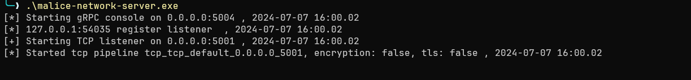
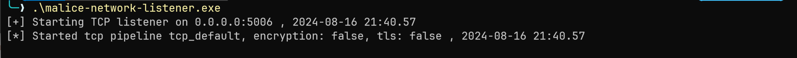
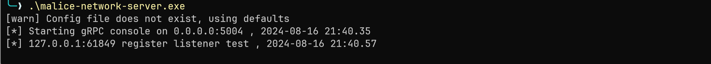
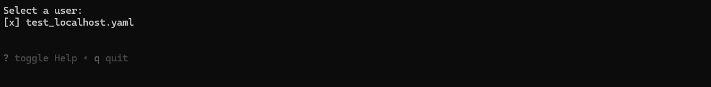

install&deploy
本文主要部署相关的参数细节
Config 示例¶
config.yaml 是 Malice-Network 服务器的配置文件，其中包含了一些服务器以及 listener 可选的配置。
默认配置中包含了 tcp, pulse, website, bind 的 pipeline 示例.
debug: false # 开启debug日志
server:
grpc_port: 5004
grpc_host: 0.0.0.0
ip: 127.0.0.1
audit: 1 # 0 close , 1 basic , 2 detail
enable: true
config:
packet_length: 10485760 # 10M: 1024*1024*10
certificate:
certificate_key:
notify: # 第三方应用通知
enable: false
telegram:
enable: false
api_key:
chat_id:
dingtalk:
enable: false
secret:
token:
lark:
enable: false
webhook_url:
serverchan:
enable: false
url:
github: # github action build 配置
repo: malefic
workflow: generate.yaml
owner:
token:
listeners: # listener 配置, 可独立生效
name: listener
auth: listener.auth
enable: true
ip: 127.0.0.1
# 自动化编译, 如果配置了saas/docker/github action, 会自动执行编译任务
auto_build:
enable: true
build_pulse: true
target:
- x86_64-pc-windows-gnu
pipeline:
- tcp
- http
tcp: # tcp example
- name: tcp # tcp pipeline
port: 5001
host: 0.0.0.0
protocol: tcp
parser: malefic # auto/malefic/pulse
enable: true
tls: # tls配置, 按照配置生成证书或者使用已有的证书文件
enable: true
# 自签名证书
CN: "test"
O: "Sharp Depth"
C: "US"
L: "Houston"
OU: "Persistent Housework, Limited"
ST: "State of Texas"
# 自定义证书
cert_file: ""
key_file: ""
ca_file: ""
encryption: # 加密配置, 需要与implant对应
- enable: true
type: aes
key: maliceofinternal
- enable: true
type: xor
key: maliceofinternal
http: # http example
- name: http
enable: true
host: 0.0.0.0
port: 8080
parser: malefic # auto/malefic/pulse
tls:
enable: tls
# 填写如下选项会进行替换
CN: "test"
O: "Sharp Depth"
C: "US"
L: "Houston"
OU: "Persistent Housework, Limited"
ST: "State of Texas"
#
cert_file: ""
key_file: ""
ca_file: ""
encryption:
- enable: true
type: aes
key: maliceofinternal
- enable: true
type: xor
key: maliceofinternal
error_page: ""
- name: http-pulse
enable: true
host: 0.0.0.0
port: 8081
parser: pulse
encryption:
enable: true
type: xor
key: maliceofinternal
error_page: ""
bind:
- name: bind_pipeline
enable: true
encryption:
enable: true
type: aes
key: maliceofinternal
website: # website 启动配置
- name: default-website
port: 80
root: "/"
enable: true
rem: # rem 启动配置
- name: rem_default
enable: true
console: tcp://0.0.0.0:12345
Pipeline Config¶
tcp¶
最常用的 pipeline, 适用于主体程序交互的 pipeline.
tcp 是目前支持了最多特性的 pipeline.
单个 tcp pipeline 配置:
- name: tcp_default # pipeline 名字
port: 5001 # pipeline 监听的端口
host: 0.0.0.0 # pipeline 监听的host
protocol: tcp # 传输层协议
parser: malefic # implant协议
enable: true # pipeline是否开启
tls: # tls配置项,留空则自动生成
enable: false
CN: "test"
O: "Sharp Depth"
C: "US"
L: "Houston"
OU: "Persistent Housework, Limited"
ST: "State of Texas"
cert_file: ""
key_file: ""
ca_file: ""
encryption:
enable: true
type: aes
key: maliceofinternal
其中 parser 协议用来区分对应的 implant 类型. pulse 与 malefic 目前的传输协议略有不同, 因此 pulse 需要单独的 parser 配置.
- name: shellcode
port: 5002
host: 0.0.0.0
parser: pulse # 对应malefic-pulse上线
enable: true
encryption:
enable: true
type: xor
key: maliceofinternal
website¶
IoM 允许将一些文件挂载 web 服务上
websites: # website http任务
- name: test # website 名字
port: 10049 # website 端口
root: "/test" # website route根目录
enable: false # website 是否开启
content: # website 映射内容
- path: '\images\1.png'
raw: maliceofinternal
type: raw
- path: '\images\2.png'
raw: maliceofinternal
type: raw
bind (Unstable)¶
主动发送数据的 pipeline, 不同于 tcp 监听端口. bind 会主动向目标发送对应协议序列化后的数据.
bind:
-
name: bind_default
enable: true
encryption:
enable: true
type: aes
key: maliceofinternal
启动 Server¶
Malice-Network 服务器是能与控制 Implant 并与 Malice-Network 客户端交互的主机。服务器还存储了部分 Malice-Network 收集的数据，并管理日志记录。
需要提前获取对应的配置文件: https://github.com/chainreactors/malice-network/blob/master/server/config.yaml ,并放到malice-network所在目录下
最简启动
./malice-network
如果配置文件非默认的 config.yaml, 可以通过 -c path/any.yaml 指定
启动后服务器会输出以下信息, 并生成两个配置文件, 分别为listener.auth 和admin_[server_ip].auth, 这两个配置文件后续还有用处

需要注意的是, server 中的 ip 字段需要在启动时设置为 listener 与 client 能访问到的地址, 所以可以手动修改config.yaml
server:
...
ip: 123.123.123.123
...
也可以使用-i 重载这个参数
./malice-network -i 123.123.123.123
同时启动 server 与 listener
在设计上, server 和 listener 是独立的, 为了方便部署提供了同时部署的用法, 仓库中提供的默认config.yaml同时配置了 server 与 listener. 会同时启动server, listener.
启动 Listener¶
listener与IoM中用来管理pipeline的控制器, 一般在一台服务器上只需要部署一个listener， 即可添加、删除、修改pipeline。 pipeline与真正与implant交换数据的管道。
独立部署listener¶
可选的listener启动方式
默认情况下listener与server同时启动
从 v0.0.2 开始, 将只提供一个服务端配置文件, 会根据配置自动解析需要开启的服务. 可以通过 enable 字段进行简单控制
刚才提到 Server 的 config.yaml 中已经包含了 listener 配置。 是对 server 与 listener 在同一台机器上部署时的简化。但在交互逻辑上, 同时启动的 listener 与 server 依旧通过 rpc 通讯, 与独立部署的 listener 没有任何区别.
如果要独立启动listener， 只需要创建一个单独的配置文件即可。
如果配置文件非默认的 listener.yaml, 可以通过 -c path/any.yaml 指定.
配置样例:
listeners:
enable: true
name: default
auth: listener.auth
tcp:
- name: tcp_default
port: 5001
host: 0.0.0.0
protocol: tcp
enable: true
tls:
enable: false
CN: "test"
O: "Sharp Depth"
C: "US"
L: "Houston"
OU: "Persistent Housework, Limited"
ST: "State of Texas"
encryption:
enable: false
type: aes-cfb
key: maliceofinternal
请检查 listener.auth
如果换了一台服务部署 listener, 请检查目录下是否存在listener.yaml与listener.auth
listener 成功启动后，listener 终端会输出以下信息：

Malice-Network 服务器也会输出 listener 登录信息：

autobuild¶
如果在server上配置了autobuild选项，并且配置了docker/github action至少一个编译环境，在pipeline启动时， 就会自动下发编译任务。
listeners:
name: listener
auth: listener.auth
enable: true
tcp:
- name: tcp_malefic
port: 5001
host: 0.0.0.0
protocol: tcp
parser: malefic
enable: true
auto_build:
target:
- x86_64-unknown-linux-musl
编译结果可以通过artifact命令查看
启动客户端¶
将生成的用户配置文件, 默认为 admin_[server_ip].auth 复制到 Malice-Network 客户端的所在位置。使用新的用户配置文件时，可以使用以下指令启动客户端：
.\iom login [admin_ip.auth]
执行命令后，客户端会自动使用新的客户配置文件与服务器连接，并将用户配置文件移动至客户端的用户配置文件夹 (Windows 下为 C:\Users\user\.config\malice\configs, Linux 为 /home/[username]/.config/malice/configs，MacOS 为 /Users/[username]/.config/malice/configs）
客户端登录成功后会输出以下信息：

下次登录后，客户端会自动显示在用户配置文件夹下所有的用户配置，根据需求，选择对应的用户进行选择。
./iom

每个client下拥有独立的profile配置，每次client启动都会读取对应的用户配置。如果在多用户情况下需要进行私有配置，可以在client的用户配置文件下的malice.yaml进行修改。
resources: ""
tmp: ""
aliases: [] # sliver aliases本地加载列表
extensions:[] # sliver extensions本地加载列表
mals: [] # mals本地加载列表
settings:
max_server_log_size: 10 # 每个session在iom保存的最大日志个数
github_repo: "" # malefic的仓库名
github_owner: "" # github用户名
github_token: "" # github的token
github_workflow_file: generate.yaml # workflow的配置文件名（默认为generate.yaml
ROOTRPC¶
malice-network 实际上还存在一个高权限的管理组件. 需要根证书配置才可实现. 这个证书不会生成.auth文件, 直接保存在服务端配置和数据库中.
只允许已经启动了malice-network的机器上, 继续通过malice-network user 或 malice-network listener 进行用户管理.
认证文件¶
Malice-Network 客户端需要使用用户配置文件才能与服务端进行交互。用户配置文件中包含由服务端生成的证书信息。每次客户端尝试连接服务端时，服务端都会校验该证书信息，以确保用户的合法性。这一过程保证了只有经过认证的用户才能访问和使用 Malice-Network 服务，从而提升了系统的安全性和可靠性。
所有的远程 rpc 交互都需要auth文件使用 mtls 认证.
operator: listener # 操作者名字
host: 127.0.0.1 # server grpc ip
port: 5004 # server grpc port
type: listener # 操作者类型, 如果不匹配则会认证失败, 默认生成的即可
ca: |
...
private_key: |
...
certificate: |
...
添加 client¶
默认情况下, 会生成一个admin_[server_ip].auth的配置. 大部分情况下, 使用这个 auth 即可.
目前所有用户都是平级的, 但可以在服务端添加或吊销指定用户的证书实现简单的管理
在确保 Malice-Network 服务器已经运行后，在终端输入以下指令：
.\malice-network user add [username]
执行命令成功后，服务端会输出以下信息并在所处文件夹下生成对应用户配置文件：

也可以删除用户, 吊销证书, 使其无法登录 server
.\malice-network user del [username]
列出所有可用的用户配置
.\malice-network user list
添加 listener¶
在确保 Malice-Network 服务器已经运行后，在终端输入以下指令：
.\malice-network listener add [listener_name]
执行命令成功后，服务端会输出以下信息并在所处文件夹下生成对应 auth 配置文件：
也可以删除用户, 使其无法登录 server
.\malice-network listener del [listener_name]
列出所有可用的用户配置
.\malice-network listener list